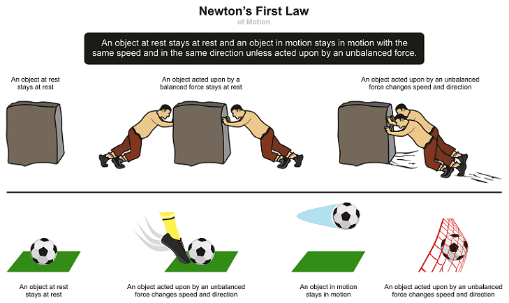
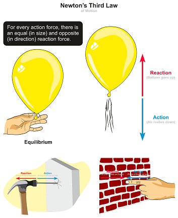

He is well known for his discoveries in optics (white light composition) and mathematics (calculus), it is his formulation of the three laws of motion, the basic principles of modern physics, for which he is most famous.
He was born on December 25, 1642 and Died on March 20 , 1727 Sir Isaac Newton worked in many areas of mathematics and physics. He developed the theories of gravitation in 1666 when he was only 23 years old. In 1686, he presented his three laws of motion in the “Principia Mathematica Philosophiae Naturalis.”
The importance of Newton lies in his formulation of the laws of motion and universal gravitation, which transformed our understanding of how objects move and interact. He also developed calculus, providing a powerful mathematical tool for solving complex problems in science. Additionally, his work in optics helped shape the study of light and color, cementing his legacy as a foundational figure in science.
Isaac Newton was a English physicist and mathematician who was the culminating figure of the Scientific Revolution of the 17th century.
An object will continue to be in the state of rest or in a state of motion unless an external force acts on it.
For every action, there is an equal and opposite reaction.
Force is equal to the rate of change of momentum. For a constant mass, force equals mass times acceleration.
an external agent capable of changing a body’s state of rest or motion. It has a magnitude and a direction.
the measure of the amount of matter in a body
The rate of change of velocity with respect to time.
the rate of change of the object’s position with respect to a frame of reference and time.
the change in position of an object
An object at rest remains at rest, and an object in motion remains in motion at constant speed and in a straight line unless acted on by an unbalanced force.
This principle is described by Newton’s First Law, also known as the law of inertia. It states that every object will remain at rest or in uniform motion in a straight line unless compelled to change its state by the action of an external force. This resistance to changes in motion is what we call Inertia.
Inertia is the property of an object to stay at rest or continue moving at a constant velocity unless influenced by an external force. Without this tendency, the world would be chaotic. Imagine if the furniture in your bedroom suddenly started moving on its own—such unpredictability would make it impossible, or even dangerous, to spend time in such a space.
A book sitting still on a table will remain at rest unless someone pushes it or another force acts on it
(like gravity pulling it down).
Explanation: The book's inertia keeps it stationary until a force acts on it.
A hockey puck will keep sliding on a smooth ice surface at a constant speed until forces like friction or a
player's stick act on it to slow it down.
Explanation: The puck continues its motion due to inertia, but external forces (friction, stick) change its
motion.
When a car suddenly stops, your body continues moving forward. The seatbelt applies a force to stop you,
preventing you from continuing at the car’s speed.
Explanation: Your body has inertia and wants to keep moving, but the external force (seatbelt) stops you.
Newton's second law of motion pertains to the behavior of objects for which all existing forces are not balanced. The second law states that the acceleration of an object is dependent upon two variables - the net force acting upon the object and the mass of the object. The acceleration of an object depends directly upon the net force acting upon the object, and inversely upon the mass of the object. As the force acting upon an object is increased, the acceleration of the object is increased. As the mass of an object is increased, the acceleration of the object is decreased.
The Second law states:
The acceleration of an object is connected to the force which is acting on it. The object speeds up due to
the force acting on it.
This is why this law has a formula: a = F / m, in which: a — is the acceleration that is measured in meters per second squared (m/s2). It means that if an object accelerates at 1 m/s2, its speed is increasing by 1 meter per second every second. F — is a force that is measured in newtons (yes, he was so cool they named this unit of measurement in his honor) m — is an object’s mass that is measured in kilos.
A light stroller moves faster with a little push, but a heavier stroller needs more force to move at the
same speed.
Explanation: The stroller’s acceleration depends on its mass and the force applied.
Throwing a small tennis ball is easier and faster than throwing a heavy basketball with the same effort.
Explanation: The lighter tennis ball requires less force to accelerate, while the heavier basketball resists
motion more due to its greater mass.
A stronger kick makes the ball go farther because more force means more acceleration.
Explanation: Greater force increases the ball’s acceleration, demonstrating the direct relationship between
force and motion.
Newton's Third Law tells us that forces in nature always come in pairs: for every action, there’s an equal and opposite reaction. If object A pushes or pulls on object B, object B pushes or pulls back on object A with the same strength but in the opposite direction. In short, forces don’t exist in isolation—they’re the result of interactions between objects.
What Newton means by it is that there are always two forces acting on each other at the same time in the opposite directions. And there are no isolated forces — it is a package deal. The first force comes from outside. The second one is the reaction on the first one, which acts back on the object exerting that force. These two forces are always equal, and in the end, they compensate each other.
This law signifies a particular symmetry in nature: forces always occur pairs, and one body cannot exert a force on another without experiencing a force itself. In the next few sections, let us learn Newton’s third law in detail. That is why this law is called the the law of action and reaction.
When someone fires a gun, the action force pulls the bullet outside the gun
Explanation: The reaction force pushes the gun backward, known as recoil.
When you walk, you push the street.
Explanation: You apply an action force on the street's ground, and the
reaction force moves you forward.
The action force is applied on the boat when you jump from the boat.
Explanation: The reaction force pushes you to land. Parallelly, the action force pushes the boat backwards.
1. A car suddenly stops, and the passengers lurch forward. Which law of motion is this?
Newton's First Law of Motion
Inertia
2. A rocket launches into space by expelling gas downwards. Which law of motion is this?
Newton's Third Law of Motion
Action and Reaction
3. A heavier object requires more force to accelerate than a lighter object. Which law of motion is this?
Newton's Second Law of Motion
Acceleration
4. A person pushes a wall, but the wall does not move. Which law of motion is this?
Newton's Third Law of Motion
Action and Reaction
5. A ball rolling on the ground eventually comes to a stop. Which law of motion is this?
Newton's First Law of Motion
Inertia